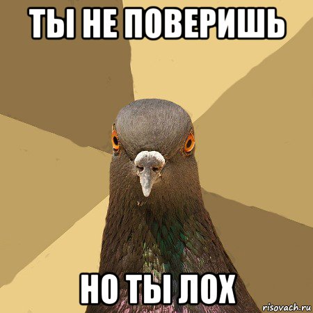

Привет, лох!

Если ты попал на этот сайт, значит ты стал лохом. Скорее всего тебе кто-то хотел сказать, что ты лох, и он сделал это очень красиво и элегантно скинув тебе эту ссылку, ведь любой другой грамотный человек не стал бы тебе напрямую это говорить.
Не волнуйся! Ты не единственный лох на планете, до тебя на этом сайте было более 6 тыс. человек, зато теперь ты тоже можешь красиво и элегантно говорить другим людям, что они лохи.
Эй, я не хочу быть лохом!
Директор сайта: Тёма Плотников, скриптер сайта: Офигенный программист Николаев
(c)ТыЛОХ.ру 2018